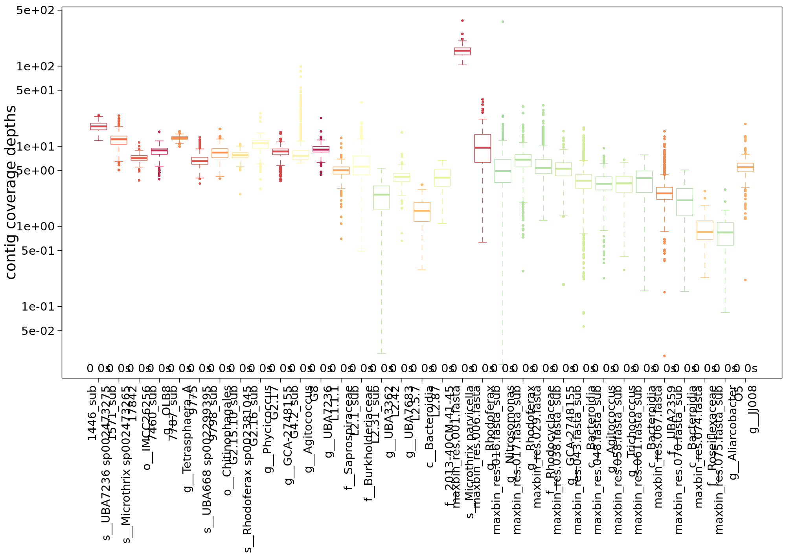
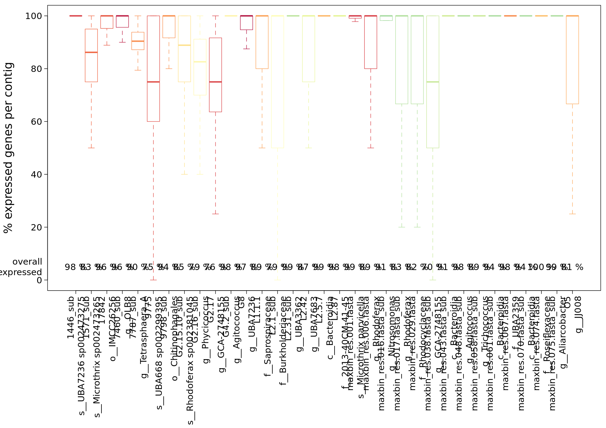

Part 5: Extract information for one MAG
An informative analysis is to look at the transcript profiles for single MAGs. IMP gives a small summary of the coverage with metagenomics and metatranscriptomics reads of the MAGs in a sample:
 For this hands-on session, we’ve extracted the contigs and some annotation as well as read-mapping data for a single, dominant MAG from the complete IMP3 output. In the figures above, it is the first bin represented by a red box in the centre of the plots.
Here is the code we have used to extract the GFF information:
for sample in 2011-07-08 2011-08-29 2011-10-12 2011-11-29 2012-01-19 2012-03-08
do
cd /work/projects/embomicrobial2020/data/metaT/annotations/$sample
bin=`cat /work/projects/embomicrobial2020/data/metaT/binning/$sample/bins`
samplegff=$sample.annotation_CDS_RNA_hmms.gff
bingff=$bin.$sample.annotation_CDS_RNA_hmms.gff
for contig in `cat /work/projects/embomicrobial2020/data/metaT/binning/$sample/$bin.ids`
do
grep $contig $samplegff
done > $bingff
done
And this is the code for the extraction of only those reads which map to the contigs in the MAG.
conda activate /work/projects/embomicrobial2020/tools/IMP/conda/bff6861f
for sample in 2011-07-08 2011-08-29 2011-10-12 2011-11-29 2012-01-19 2012-03-08
do
cd /work/projects/embomicrobial2020/data/metaT/binning/$sample
bin=`cat bins`
grep ">" $bin.contigs.fa | sed "s/>//" >$bin.ids
samtools view -bS ../../mapping/$sample/mg.reads.sorted.bam `cat $bin.ids` >$bin.mg.bam
samtools view -bS ../../mapping/$sample/mt.reads.sorted.bam `cat $bin.ids` >$bin.mt.bam
samtools index $bin.mg.bam
samtools index $bin.mt.bam
done
Exercise
If you have time, extract the commands from our little loops to run the commands to write the data for your sample to your /scratch/users/$USER directory. You can also practice to make a snakemake rule.